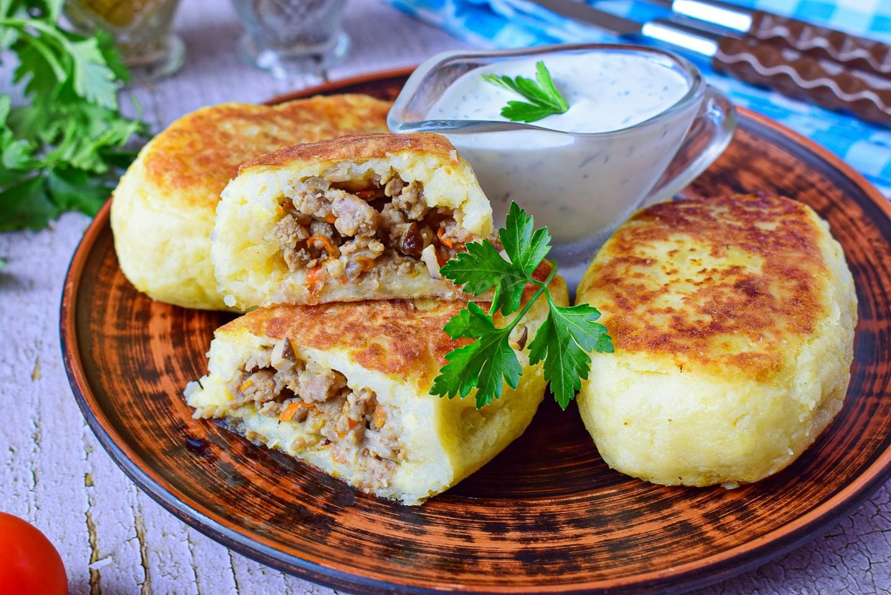

| Название блюда | Оценка | Ссылка на рецепт | Фото |
|---|---|---|---|
| Блины | 6 | Рецепт блинов | |
| Хачапури по аджарски | 7 | Рецепт хачапури по аджарски | |
| Зразы картофельные с мясом | 8 | Рецепт зраз картофельных с мясом |  |
| Пельмени | 10 | Рецепт пельменей | |
| Сырники | 5 | Рецепт сырников | |
| Хинкали | 9 | Рецепт хинкалей | |